Guitar Giftware
A Guitarist’s Presents offers guitar gifts for all players, from beginners to lifelong strummers.
With a focus on design, quality materials, and engaging content, our products bring real enjoyment to guitarists.
Whether celebrating a milestone or having fun, AGP's guitar giftware always hits the right notes.
Guitar Card Games
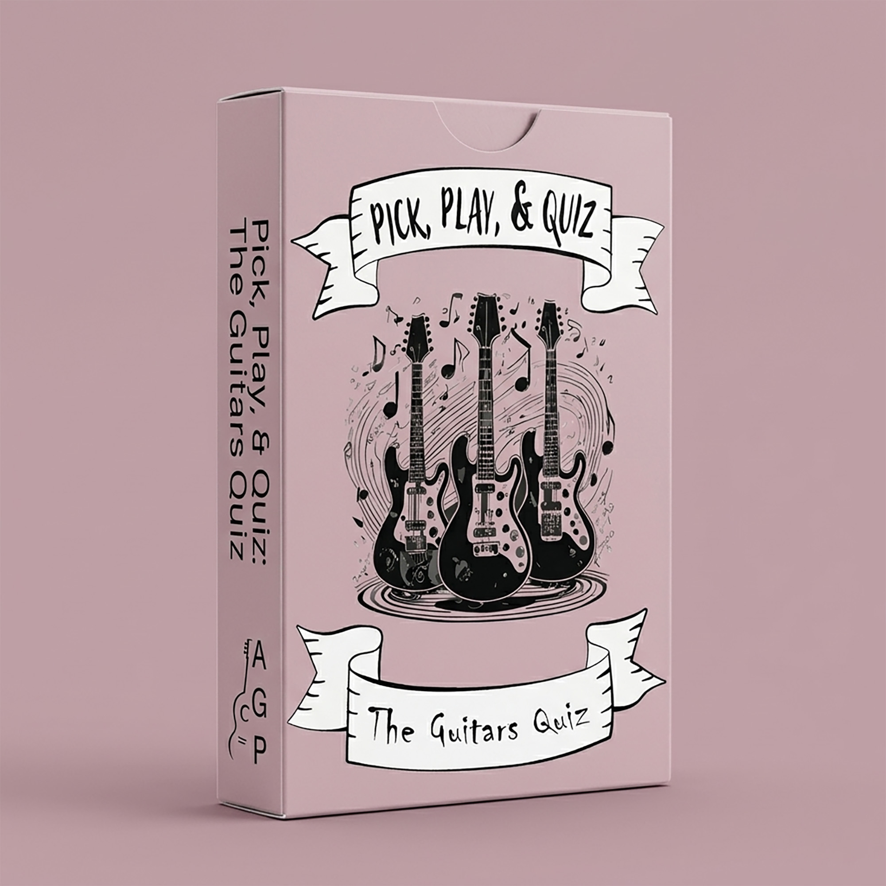
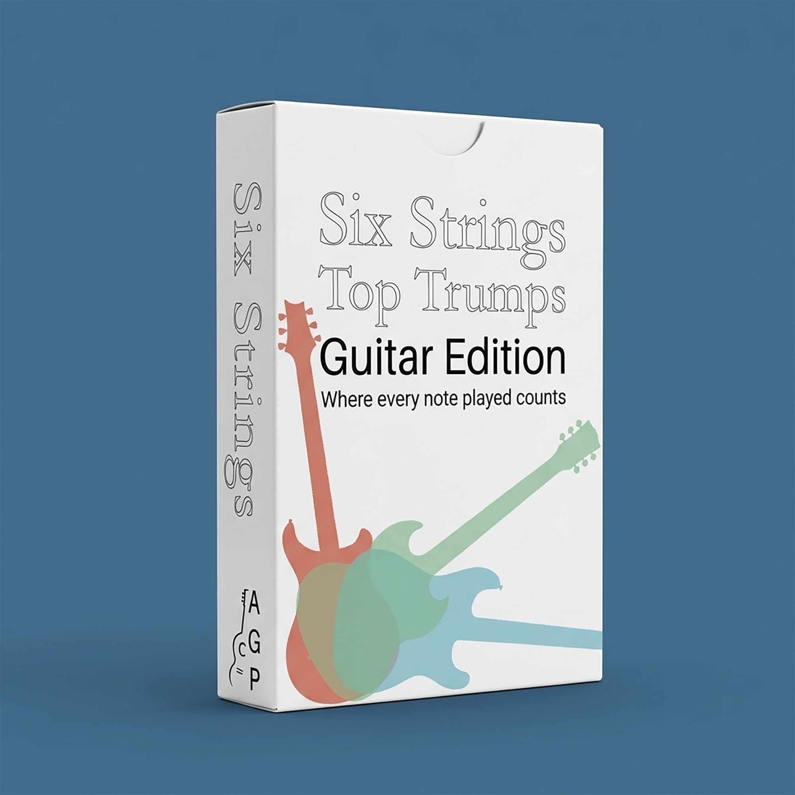
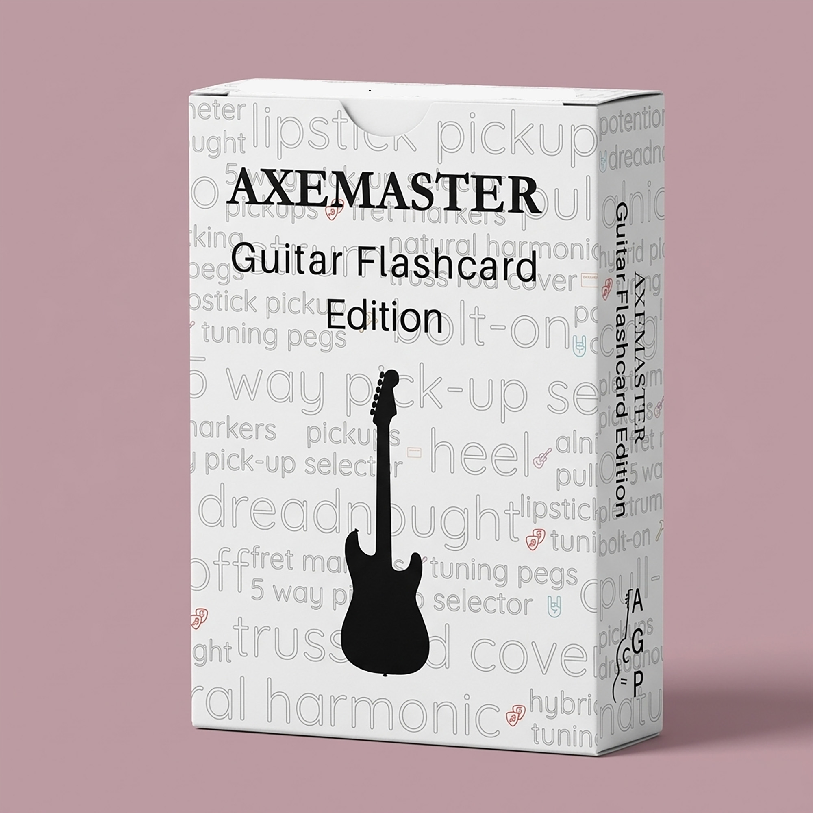
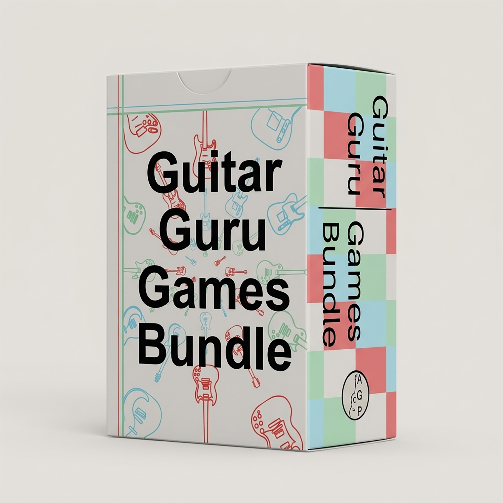
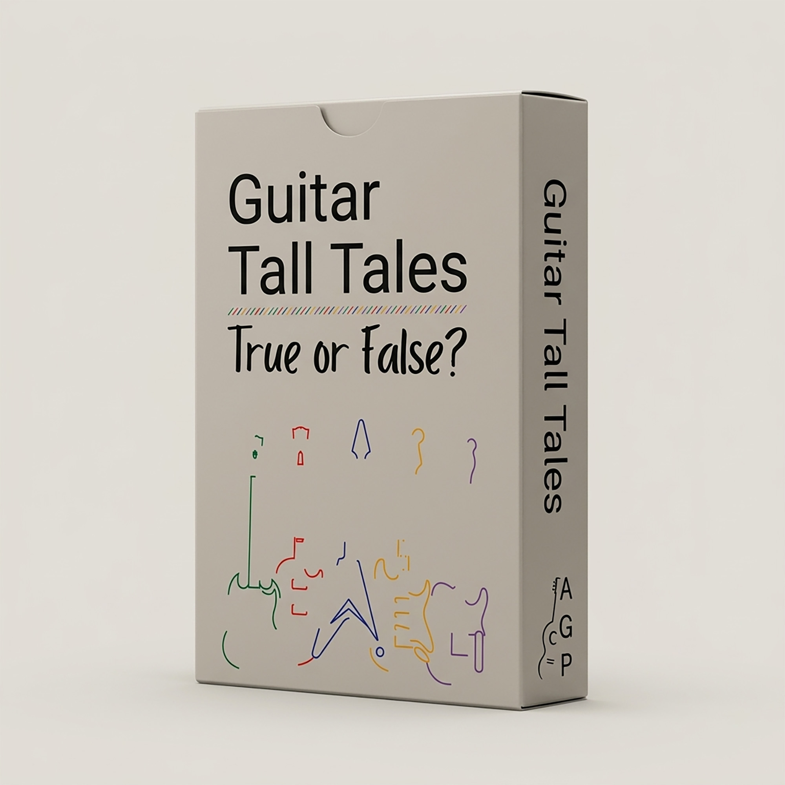
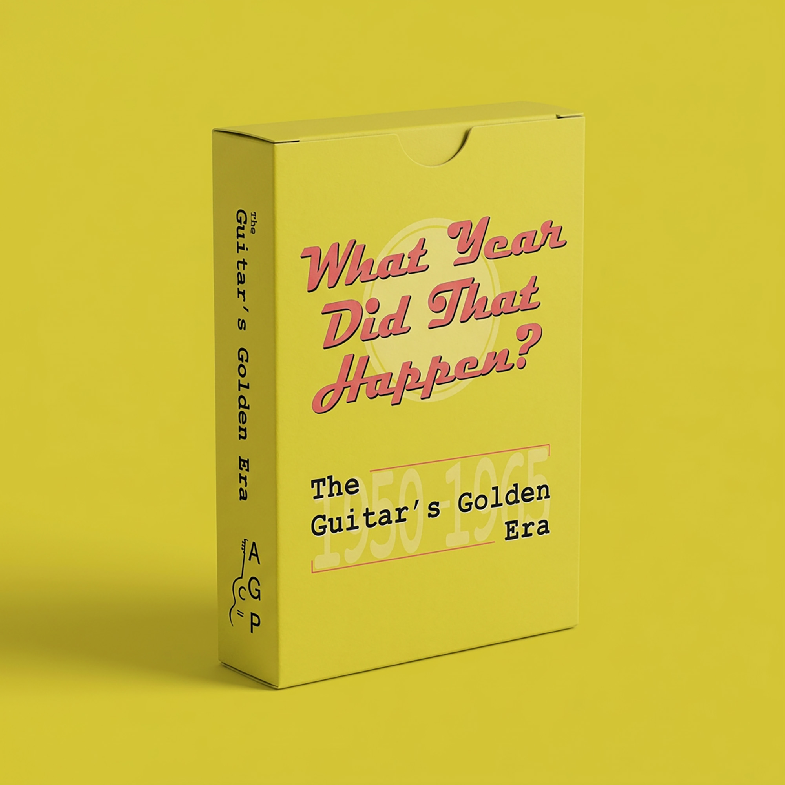
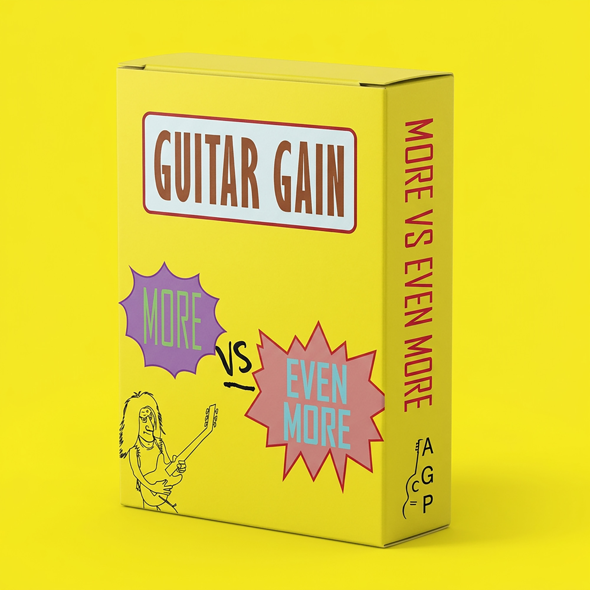
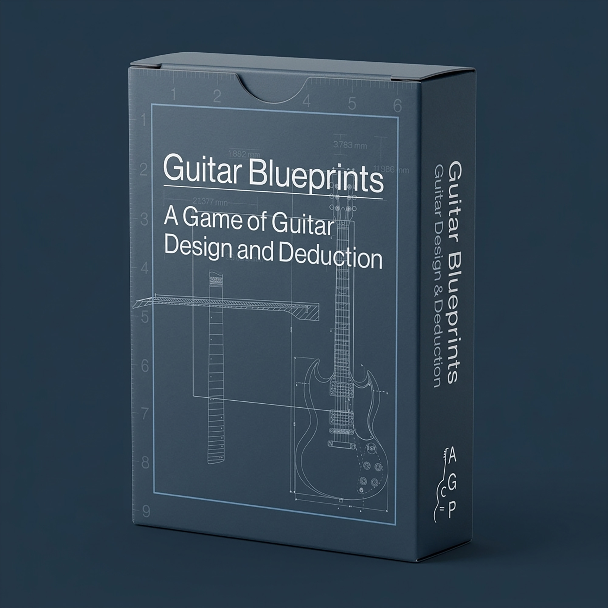
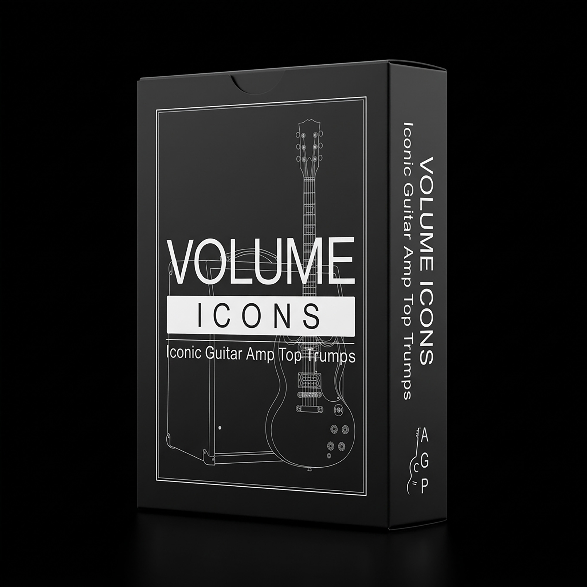
Guitar DIY Craft Kits

Guitar Wrapping Paper
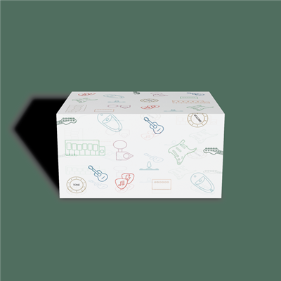
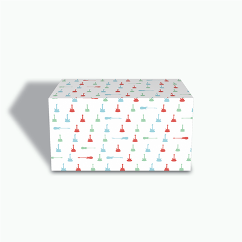
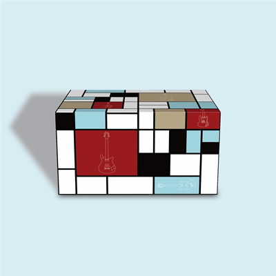
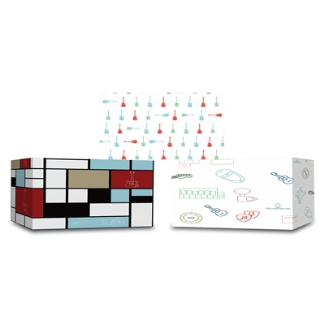